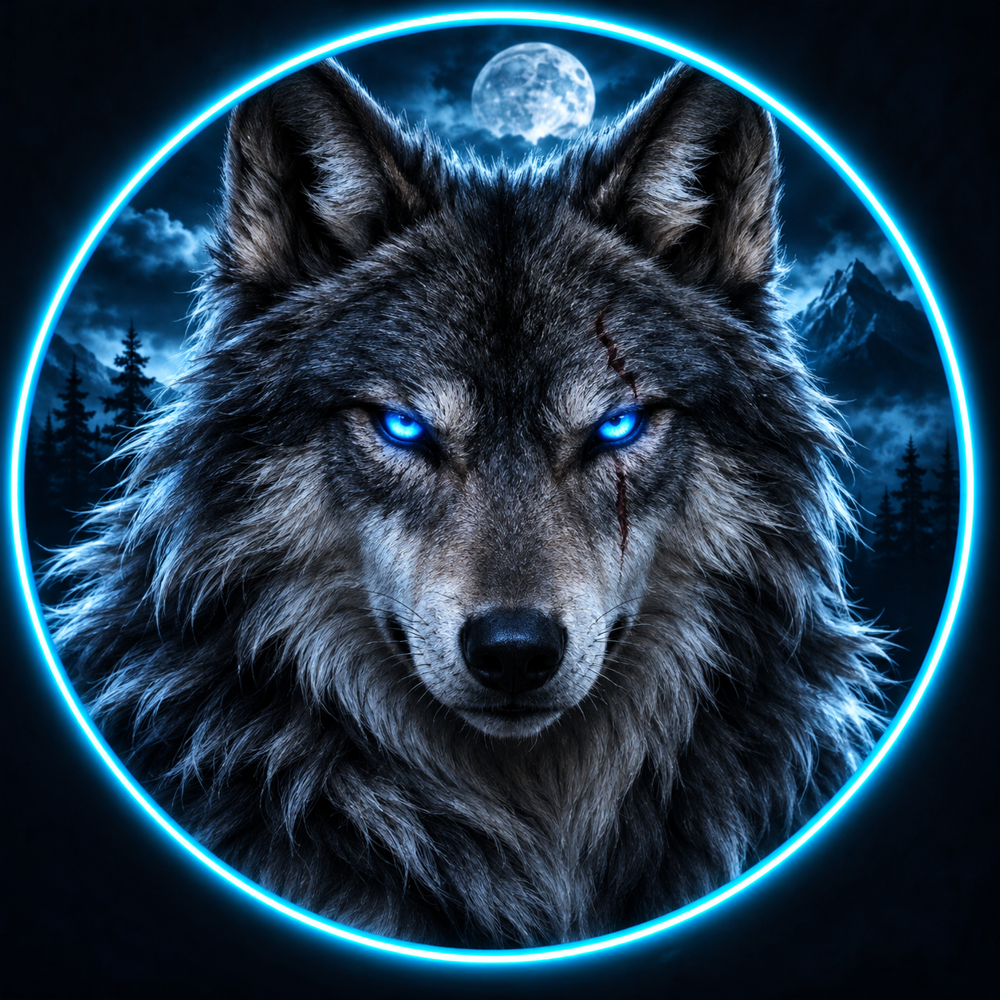
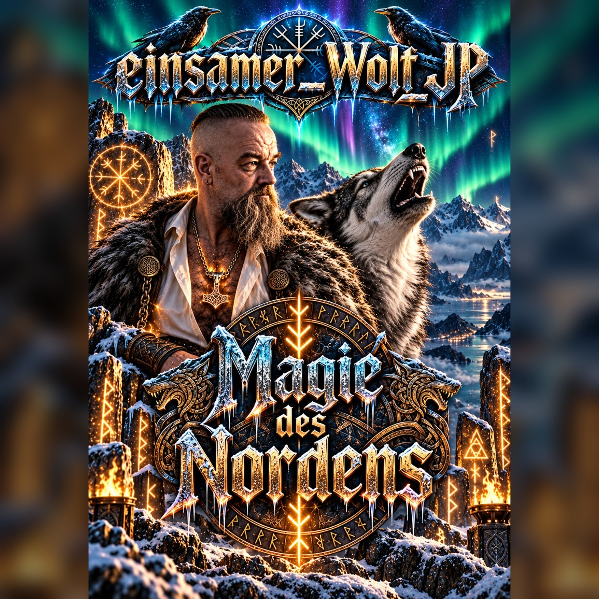
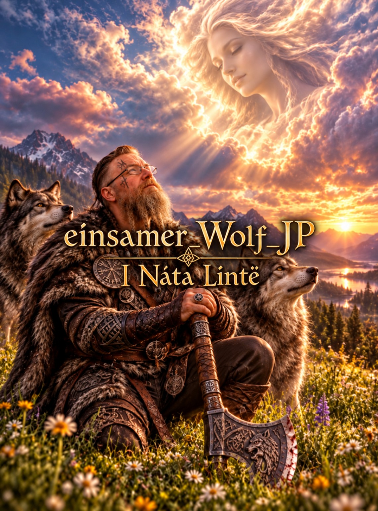
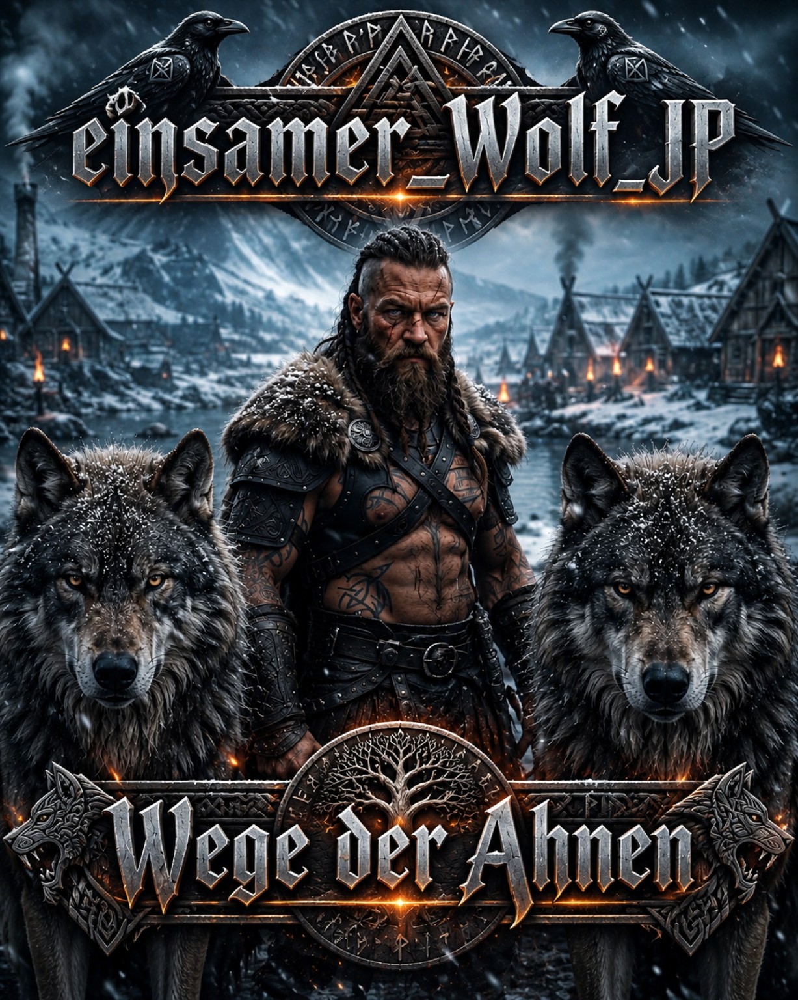
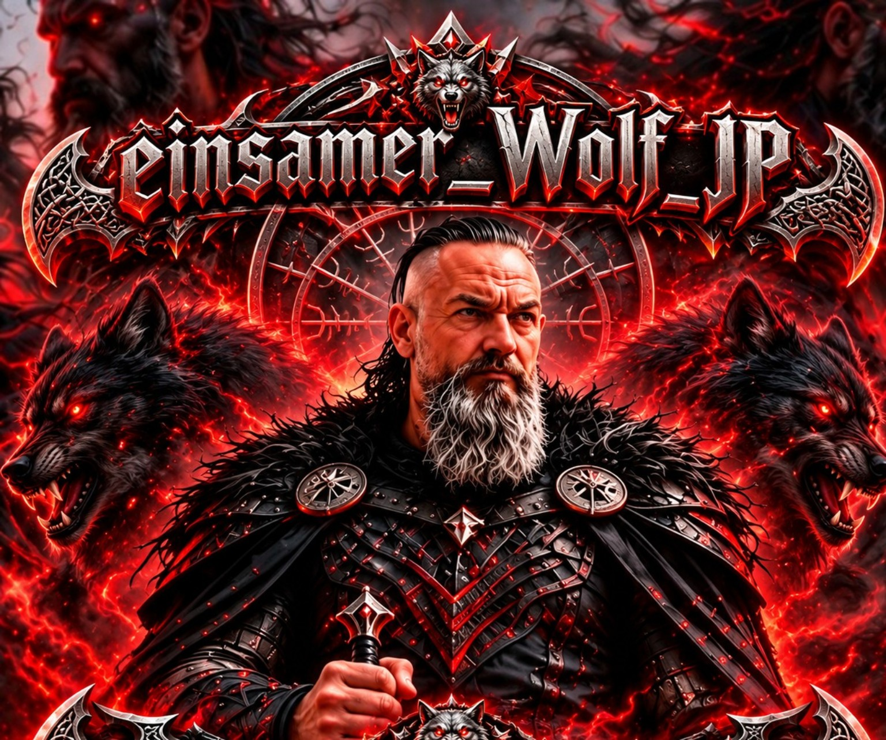

Jens
„Ich finde die Seite sehr schön und auch die Musik ist Klasse. Weiter so.“
Nicht perfekt. Nicht angepasst. Einfach ich!
Erscheinungstermin: 25.11.2026
Ein neuer Klang aus dem Wolfsrevier. Merkt euch den Termin!
Musik, die aus mir kommt – eigene Texte, Gedanken und Geschichten, musikalisch zum Leben erweckt.
Der Spotify-Player wird erst geladen, wenn du ausdrücklich zustimmst. Dabei wird eine Verbindung zu Spotify hergestellt.
Die Freigabe gilt nur, solange diese Seite geöffnet ist.

„Blicke zurück, um zu erkennen, wie weit du gekommen bist. Schau nach vorn, um deinen Horizont nicht aus den Augen zu verlieren. Und vergiss nicht, nach rechts und links zu schauen. Denn manchmal liegen die schönsten Dinge nicht am Ziel, sondern direkt am Wegesrand.“
Ein Gedanke aus dem Wolfsrevier
„Jede Spur erzählt eine Geschichte. Schön, dass du einen Teil deiner Geschichte im Wolfsrevier hinterlässt.“
Hinterlasse einen Gruß oder ein paar Worte. Dein Eintrag wird mir zunächst per E-Mail zugeschickt und erst nach meiner Prüfung hier im Wolfsrevier veröffentlicht.
Bitte teile hier keine privaten Kontaktdaten oder vertraulichen Informationen. Dein Eintrag erscheint nicht automatisch öffentlich.
Hier findest du die Grüße, die ich für das Wolfsrevier freigegeben habe – die neuesten stehen oben.
„Ich finde die Seite sehr schön und auch die Musik ist Klasse. Weiter so.“

Hinter dem Namen steckt Jens – ein Mensch mit Ecken und Kanten, Herz, Humor, eigenen Gedanken und einer eigenen Sicht auf die Dinge. Ich verstelle mich nicht, um anderen zu gefallen. Ich habe meine Meinung, meine Überzeugungen und meinen eigenen Weg.
Ich schreibe meine Songtexte selbst – aus Ideen, Gedanken, Beobachtungen und Geschichten, die das Leben schreibt. Die musikalische Umsetzung und Produktion entstehen mit Unterstützung von KI. Die Worte und der kreative Kern stammen von mir. Ich möchte Texte schaffen, die ausdrücken, berühren und zum Nachdenken anregen.
Beruflich arbeite ich als Altenpflegefachkraft. Menschlichkeit, Geduld, Respekt und Humor sind dabei wichtig. Mein kreativer Weg und meine Arbeit in der Pflege sind zwei Seiten meines Lebens.
Ich muss nicht jedem gefallen und nicht in jede Schublade passen. Lieber echt als perfekt. Lieber eigenständig als angepasst.
Willkommen in der Welt von einsamer_Wolf_JP! Schön, dass du vorbeischaust. Hör rein, schau dich um und lerne meine musikalische Welt kennen.
Hier erscheinen künftig neue Songs, Veröffentlichungen und Ankündigungen.




T-Shirts, Hoodies, Tassen und mehr – sobald der Shop eröffnet ist.
Folge dem Wolf
Du möchtest mehr von mir und meiner Musik entdecken? Dann folge mir auf meinen sozialen Kanälen!